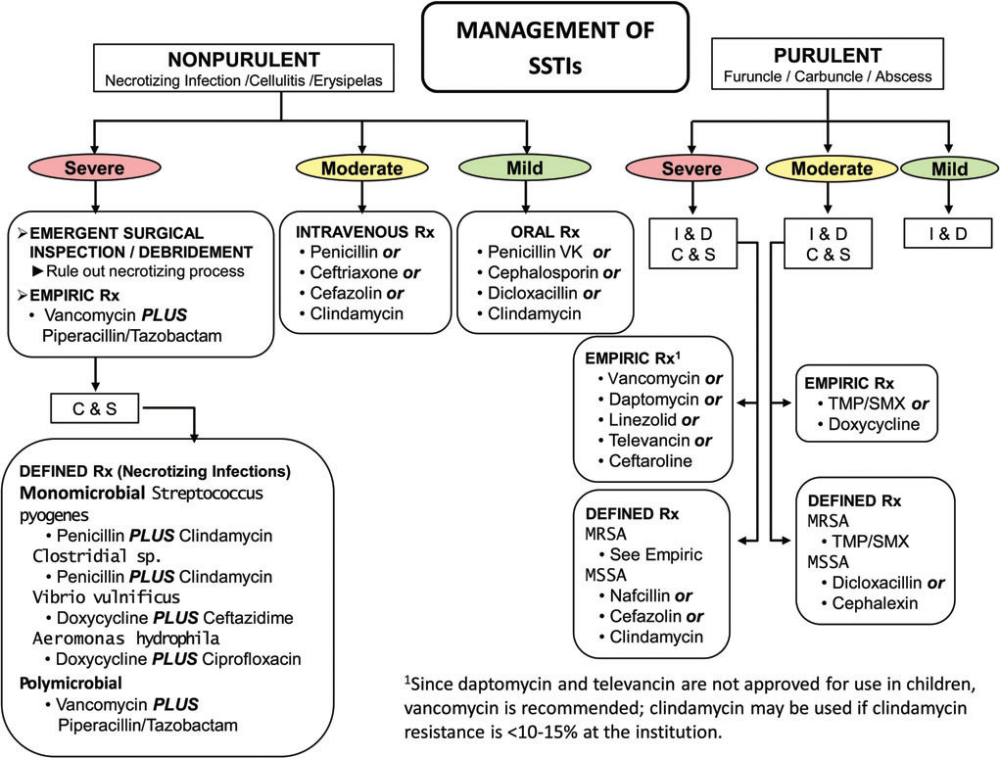

Skin and soft tissue infections¶
Definitions¶
- Cellulitis: infection of dermis and subcutaneous tissue characterized by erythema, warmth, tenderness, and swelling; often occurs as a result of skin breaches (JAMA 2016;315:3)
- Skin abscess: subcutaneous collection of pus
- Staph toxic shock syndrome: rapid onset fever, rash, hypotension, and multiorgan injury. Staph aureus culture are not necessary for diagnosis. Often associated with packing (tampon, nasal packing). Management may require surgical debridement + antibiotics
Risk Factors (CID 2014;59:e10)¶
- Trauma
- Edema
- Preceding skin inflammation or infection
- Obesity
- DM
- Other immunosupp.
Microbiology¶
- Purulent: MRSA (NEJM 2006;355:666) causes up to 75% of purulent skin/soft tissue infections, followed by MSSA and strep
- Non-purulent: Strep, MSSA, aerobic GNRs. MRSA less commonly unless significant risk factors (prior MRSA infection, IVDU, HD, recent abx or hospitalization).
- Bites: skin (Strep , Staph [MRSA only if risk factors]) and oral flora (including anaerobes) + special exposures:
| Feature | Microbiology | Clinical | Treatment |
|---|---|---|---|
| Cat bit^ | Pasturella spp | Rapid onset erythema, swelling, lymphangitis, fever | Amox/clav |
| Dog bite | Pasturella & Capnocytophaga spp | Can cause severe sepsis with DIC & gangrene in asplenic/cirrhotics and other immunosupp. | Amox/clav If Capno. suspected: pip/tazo or carbapenem |
| Penetrating injury | Pseudomonas | Can be associated with deep tissue abscess | Directed based on suscept. |
| Gardening | Sporothrix | Ulcerating nodules, lymphatic spread | Itraconazole |
| Salt H2O or raw oysters/fish | V. vulnificus | Hemorrhagic bullae & sepsis (esp. in cirrhotics) | Doxy + Ceftazidime/ceftriaxone |
| Mycobacterium marinum | Indolent, nodules on extremities/superficial lymphadenitis | Macrolide + rifampin/ethambutol | |
| Fresh H2O | Aeromonas | Myonecrosis/rhabdo can occur. | FQ, TMP-SMX, or ceftriaxone |
| ^Cat scratch disease caused by Bartonella acquired via cat scratch or bite. Results in lymphadenitis. |
Diagnosis¶
- Clinical diagnosis based on physical examination
- Cultures from intact skin are not helpful and should not be performed (CID 2014;59:e10)
- Blood culture are typically low yield (˜5-10%)
- Ultrasound can be used to identify deep abscesses and facilitate drainage. If abscess is found, incision/drainage is key to treatment.
- Aspirate from an abscess may provide microbiologic diagnosis
Cellulitis Treatment (NEJM 2014;370:2238; CID 2014;59:e10; JAMA 2016;316:325 & 2017;317:2088)¶
| Purulent | Usual Microbiology | Severity | Treatment |
|---|---|---|---|
| No | β-hemolytic Strep >S. aureus | Mild | Oral: penicillin VK, cephalosporin |
| Mod | IV: penicillin, ceftriaxone, cefazolin | ||
| Severe | IV: vanc + pip/tazo (± clinda for toxic shock syndrome) | ||
| Yes | S. aureus (incl. MRSA) >> β-hemolytic Strep | Mild | Consider I&D only vs. I&D + clinda or TMP-SMX (NEJM 2017;376:2545) |
| Mod | I&D + TMP-SMX or doxycycline | ||
| Severe | I&D + IV vanc, daptomycin or linezolid (± clinda for toxic shock syndrome) |
Mild: abscess <2 cm, no systemic signs of infection, immunocompetent, no indwelling hardware; moderate: systemic signs; severe: SIRS or immunosuppressed

- Purulent skin and soft tissue infections (SSTIs)
- Mild infection: for purulent SSTI, incision and drainage is indicated.
- Moderate infection: patients with purulent infection with systemic signs of infection.
- Severe infection: patients who have failed incision and drainage plus oral antibiotics or those with systemic signs of infection such as temperature >38°C, tachycardia (heart rate >90 beats per minute), tachypnea (respiratory rate >24 breaths per minute) or abnormal white blood cell count (>12000 or <4000 cells/μL), or immunocompromised patients.
- Nonpurulent SSTIs
- Mild infection: typical cellulitis/erysipelas with no focus of purulence.
- Moderate infection: typical cellulitis/erysipelas with systemic signs of infection.
- Severe infection: patients who have failed oral antibiotic treatment or those with systemic signs of infection (as defined above under purulent infection), or those who are immunocompromised, or those with clinical signs of deeper infection such as bullae, skin sloughing, hypotension, or evidence of organ dysfunction.
- Abbreviations: C & S, culture and sensitivity; I & D, incision and drainage; MRSA, methicillin-resistant Staphylococcus aureus; MSSA, methicillin-susceptible Staphylococcus aureus; Rx, treatment; TMP/SMX, trimethoprim-sulfamethoxazole.
- Limb elevation; erythema may worsen after starting abx b/c bacterial killing → inflam.
- In obese Pts, adequate drug dosing important to avoid treatment failure (J Infect 2012;2:128)
- Duration: 5 to up to 14 d based on severity and response to treatment. Take pictures & draw margins to track progress.
NECROTIZING SOFT-TISSUE INFECTIONS (NEJM 2017;377:2253)¶
Definition¶
- Fulminant tissue destruction, systemic toxicity & high mortality. Surgical emergency.
- May include cellulitis, fasciitis, myositis, myonecrosis (gas gangrene).
Risk factors¶
- Can affect healthy individuals via skin/mucosal breach or traumatic wound, but ↑ risk w/ DM, PVD, alcohol abuse, IVDU, cirrhosis, or other immunosupp.
Microbiology¶
Necrotizing fasciitis¶
- Type I: polymicrobial (mixed aerobes & anaerobes), typically in older Pts w/ above RFs.
- Fournier's gangrene involves genitalia and/or perineum
- Head and neck NSTI evolve from oral flora including anaerobes
- Type II: monomicrobial, usually group A strep, less likely Staph, Vibrio, Aero.; a/w TSS
- Clostridial myonecrosis (gas gangrene): C. perfringens; C. septicum (large Gram ⊕ rods w/ blunt ends on Gram stain). A/w traumatic wounds that create an anaerobic environment ideal for Clostridia.
Clinical manifestations¶
- Erythema, edema, warmth + systemic illness ± crepitus, bullae, necrosis
- Rapid progression of clinical signs
- Pain out of proportion to apparent cellulitis; skin hyperesthetic and later anesthetic
Diagnosis¶
- Clinical diagnosis is sufficient to initiate urgent surgical exploration
- Aspiration of necrotic center; blood culture; Gram stain; lactate, AST, & CK for deep tissue necrosis
- Imaging: noncontrast CT, but do not delay Rx/surgery (Arch Surg 2010;145:452)
- Microbiologic diagnosis from Gram stain and culture of surgical specimens
Treatment (CID 2014;60:169)¶
- Urgent surgical exploration with debridement of necrotic tissue and ID consultation
- Empiric antibiotics: [pip/tazo or ceftriaxone + metronidazole or carbapenem] + [vanco or linezolid]. For Group A Strep: penicillin + clindamycin + consideration of IVIG for toxic shock.
DIABETIC FOOT INFECTIONS¶
Microbiology and severity (CID 2004;39:885)¶
- Mild (superficial ulcer, no involvement of deeper structures, surrounding erythema <2 cm, and no systemic illness): usually S. aureus or aerobic streptococci
- Moderate (ulcer with involvement of deeper structures, surrounding erythema >2 cm, or lymphangitic streaking and no systemic illness): more likely to be chronic and polymicrobial (PsA, enterococci, enteric GNR , anaerobes)
- Severe (moderate + systemic illness or metabolic instability): anaerobic streptococci, enteric GNR, PsA, Bacteroides, Clostridium
Initial evaluation¶
- Cleanse, debride, probe, and obtain deep anaerobic + aerobic cultures
- Assess for peripheral vascular disease: sensation, pulses, ABIs
Diagnosis¶
- Deep tissue wound culture at time of debridement (ideally prior to antibiotics). Superficial swabs are typically of limited utility due to colonization.
- For mod/severe: obtain blood cx, ESR, CRP
- Osteomyelitis should always be ruled out. At ↑ risk if: grossly visible bone or able to probe to bone, ulcer >2 cm, ulcer duration >1-2 wk, ESR >70. If suspicious for osteo, obtain plain films ± MRI (see osteomyelitis below).
Treatment (CID 2012;54:e132)¶
- Mild infxn: oral abx. Target GPCs (diclox, cephalexin, or amox/clav); use TMP-SMX or doxy for MRSA.
- Mod/severe infxn: IV abx. Target GPCs (vanco, linezolid,dapto) + GNRs (CTX, levo, or amp/sulb) ± anaerobes (metronidazole or clinda). Add PsA coverage (cefepime or piptazo) if: macerated wound, significant water exposure, warm climate
- Elevation, non-weight-bearing status, wound care, glycemic control, Rx for venous insufficiency and arterial ischemia
- Many require surgery: early, aggressive, and repeated debridement; revascularization or amputation may be necessary
OSTEOMYELITIS¶
- Infection of bone due to hematogenous seeding or direct spread from contiguous focus
Etiology (Lancet 2004;364:369)¶
- Hematogenous: S. aureus; mycobacterial infection of vertebral body = Pott's disease
- Contiguous focus (may be acute or chronic)
- Open fracture, orthopedic surgery, etc.: S. aureus and S. epi
- Skin breakdown + vasc. insuffic. (eg, diabetic foot, pressure ulcer): polymicrobial
- GU source (GNR, Enterococcus)
Clinical manifestations¶
- Surrounding soft-tissue compromise ± fistula to superficial skin
- ± Fever, malaise, and night sweats (more common in hematogenous than contiguous)
- Vertebral osteomyelitis (esp. IVDU): unremitting, focal back pain, ± fever (NEJM 2010;362:1022)
Diagnosis (JAMA 2008;299:806)¶
- Crucial to obtain culture data of causative organism to avoid long-term empiric abx
- Bone biopsy or tissue culture obtained surgically or via percutaneous biopsy (send aerobic, anaerobic, mycobacterial, and fungal cultures + pathology) unless ⊕ blood cx. Do not rely on swabs of ulcers or fistulae drainage.
- Physical exam: high suspicion in diabetic foot (see above) if can probe ulcer to bone or ulcer >2 cm2 (Sp 83%, 90% PPV)
- Blood cultures before antibiotics (more often ⊕ w/ acute hematogenous osteomyelitis)
- CBC, CRP, ESR (>70 greatly ↑ likelihood of osteo)
- Imaging
- Plain radiographs: normal early in disease; lytic lesions seen after 2-6 wk
- MRI: preferred imaging study (overall Se 90%, Sp 82%; Archives 2007;167:125)
- CT: can demonstrate periosteal reaction and cortical and medullary destruction
- CT & MRI very Se but ↓ Sp; false ⊕ if contig focus w/ periosteal reaction, Charcot Δs
- Radionuclide imaging: very Se but non-Sp (false ⊕ if soft-tissue inflammation)
Treatment¶
- Antibiotics: based on culture data. If clinically stable, consider holding antibiotics until bone bx obtained. Duration depends on Rx strategy/goals of Rx management (eg, 6 wks for vertebral osteo; Lancet 2015;385:875). After ≥7 days from either start of IV abx or surgery, if doing well consider (in consultation with ID!) Δ'ing IV to PO (if good bioavailability and bone penetration) (NEJM 2019;380:425).
- Surgery should be considered for any of the following: acute osteo that fails to respond to medical Rx, chronic osteo, complications of pyogenic vertebral osteo (eg, neurologic compromise, spinal instability, epidural abscess) or infected prosthesis
EPIDURAL ABSCESS¶
Etiology¶
- Hematogenous spread (⅔): skin infection, soft tissue (dental abscess), or endocarditis
- Direct extension (⅓): vertebral osteo, sacral ulcer, spinal anesthesia or surgery, LP
- Risk factors: IVDU diabetes, renal failure, alcoholism, immunosuppression
- S. aureus most common pathogen; in immunosuppressed, consider fungal, TB, and Nocardia
Clinical manifestations¶
- Back pain with spinal or paraspinal tenderness + fever ± followed by radiculopathy. Sx of cord compression or cauda equina is a surgical emergency.
Diagnostic studies¶
- MRI with contrast
- Aspiration of abscess fluid for Gram stain & culture or operative Gram stain & culture
- Blood culture (frequently ⊖)
Treatment¶
- Antibiotics (typically MRSA and gram-negative coverage initially then narrowed based on culture data) ± surgery (decompressive laminectomy and debridement) for failure to improve on medical therapy. Emergent surgery for early s/s of cord compression (w/ vertebral osteo and epidural abscess).